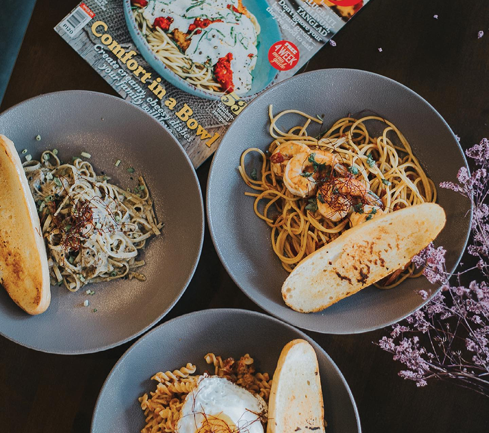

Flavors of Filipino Authenticity
Mr. Kristian Gildo Cayabyab, the owner of Sift Laureana Cafe, blends the flavors of his childhood into unique creations like Maltesers Cheesecake in a jar, Ube Cream Cheese Pandesal, Steak Porchetta, and Potato Gratin, all carefully crafted to complement the cafe's delicious coffee.